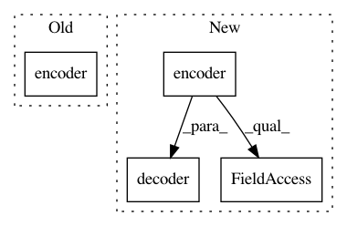

c8523b2dc735a1b82ca6170e6ca349defe9f77fc,examples/transformer.py,,,#,22
Before Change
src, tgt = sess.run([src_text, tgt_text])
print("src:{}".format(src))
print("tgt:{}".format(tgt))
encoder_output = encoder(src_text["text_ids"][:, :-1],
sequence_length=src_text["length"]-1)
// Decode
outputs, final_state, sequence_lengths = decoder(
initial_state=connector(text_database._hparams.batch_size))
After Change
decoder_inputs = tf.concat((tf.ones_like(tgt_text[:, :1]), tgt_text[:, :-1]), -1)
print("src_text:{}".format(src_text))
encoder_output = encoder(src_text,
sequence_length=text_data_batch["source_length"])
// Decode
print("encoder_output:{}".format(encoder_output.shape))
logits, preds = decoder(decoder_inputs, encoder_output)
print("logits:{}".format(logits.shape))
//istarget = tf.to_float(tf.not_equal(y, 0))
// acc = tf.reduce_sum(tf.to_float(tf.equal(preds,
// Build loss
In pattern: SUPERPATTERN
Frequency: 3
Non-data size: 4
Instances
Project Name: asyml/texar
Commit Name: c8523b2dc735a1b82ca6170e6ca349defe9f77fc
Time: 2017-11-17
Author: shore@pku.edu.cn
File Name: examples/transformer.py
Class Name:
Method Name:
Project Name: batra-mlp-lab/visdial-challenge-starter-pytorch
Commit Name: f6415170f7f90124e9cdb9ccd37cd867852b7657
Time: 2018-07-08
Author: karandesai281196@gmail.com
File Name: evaluate.py
Class Name:
Method Name:
Project Name: batra-mlp-lab/visdial-challenge-starter-pytorch
Commit Name: 42fc102b56aadde323fa695d35e109c5bfb13e7c
Time: 2018-07-08
Author: karandesai281196@gmail.com
File Name: evaluate.py
Class Name:
Method Name: